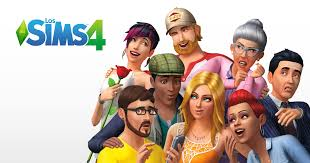
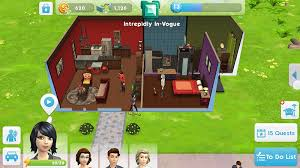

Los Sims es un videojuego de simulación social y estrategia creado por el diseñador de videojuegos Will Wright, desarrollado por Maxis y publicado por Electronic Arts en el año 2000. Desde entonces la franquicia ha vendido más de 100 millones de
copias (contando las dos primeras generaciones), siendo el videojuego de PC más vendido de la historia.
Sims (PC)
$ 250
Desripción
El juego consiste en crear personajes llamados Sims y satisfacer sus necesidades, concretar sus aspiraciones y cumplir sus sueños, es decir, "construirles" una vida. El juego, en perspectiva isométrica pseudotridimensional, permite diseñarles a los
Sims una casa y abastecerla con todos los objetos que se requieran para satisfacer sus necesidades. El juego posee una opción de modo libre (libre albedrío) con la que los personajes pueden realizar sus actividades por sí solos, aunque lo normal es
que el jugador intervenga dándoles órdenes, las cuales pueden incluso no ser respetadas por los Sims en situaciones específicas. El jugador deberá satisfacer las necesidades básicas de los Sims, como comer, dormir, o ir al baño, entre otras. Para
sustentar la economía de la casa, los Sims deberán buscar trabajo y ganar Simoleones (la ficticia moneda en el mundo Sim), el juego ofrece una variada línea de trabajos, y el personaje podrá ir ascendiendo en su trabajo dependiendo de las habilidades
que tenga y la cantidad de amigos.